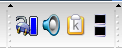
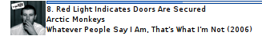
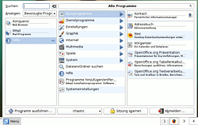

KDE Plugins
Archivierte Anleitung
Dieser Artikel wurde archiviert, da er - oder Teile daraus - nur noch unter einer älteren Ubuntu-Version nutzbar ist. Diese Anleitung wird vom Wiki-Team weder auf Richtigkeit überprüft noch anderweitig gepflegt. Zusätzlich wurde der Artikel für weitere Änderungen gesperrt.
Anmerkung: Dieser Artikel ist veraltet, eine Alternative ist der Artikel Plasma
Dieser Artikel wurde für die folgenden Ubuntu-Versionen getestet:
Zum Verständnis dieses Artikels sind folgende Seiten hilfreich:
Dieser Artikel listet einige interessante Erweiterungen für die KDE-Archiv/Kontrollleiste auf.
KNetDockApp¶
KNetDockApp  ist ein kleines Programm, das sich im Systemtray andockt und die Aktivität der ausgewählten Netzwerkschnittstelle überwacht.
ist ein kleines Programm, das sich im Systemtray andockt und die Aktivität der ausgewählten Netzwerkschnittstelle überwacht.
 Möchte man KNetDockApp ausprobiren, muss man das Paket
knetdockapp (universe, [2])
installieren [1].
Starten von KNetDockApp¶
Über den Befehl knetdockapp kann KNetDockApp gestartet werden, entweder mit Alt + F2 oder aus einem Terminal heraus [3]. Nach dem Start erscheint KNetDockApp im Systemtray der KDE-Kontrollleiste.
Einrichten¶
Um KNetDockApp einzurichten einfach einen Rechtsllick auf das Symbol in der Systemtray und den Punkt "Settings" auswählen. Nun öffnet sich ein kleines Kontextmenü, wo man unter "Interface" die gewünschte Schnittstelle auswählen kann.
KThinkBat¶
KThinkBat ist ein Applet und dient zum Anzeigen des aktuellen Batteriestandes und Stromverbrauchs. Es ist vor allem für Benutzer mit mehr als einer Batterie praktisch, da man jede Batterie einzeln anzeigen lassen kann. Obwohl der Name KThinkBat auf ThinkPads von IBM/Lenovo schließen lässt, sollte es auch auf Notebooks anderer Hersteller laufen.
Man muss sich das Plugin im bereits verlinken Eintrag von kde-apps.org herunterladen. Nach dem Entpacken [4] muss das Plugin kompiliert [5] werden. Der Vorgang sollte nicht all zu lange dauern. Anschließend taucht es als kthinkbat in der Liste der Miniprogramme auf.
Kirocker Music Display¶
 Kirocker ist ein Applet, mit dem die aktuell in Amarok gespielt Musik angezeigt wird. Zusätzlich kann man in einen Vollbild-Modus wechseln.
Der Quellcode (der entpackt [4] und kompiliert [5] werden muss) oder ein .deb-Paket [6] können auf dem bereits verlinkten Eintrag von kde-apps.org oder bei getdeb heruntergeladen werden. Nach der Installation kann der Kiorocker als "Kiorocker Music Display" in der Liste der Miniprogramme ausgewählt werden. Linkto-Suche: Fremdquellen

Tasty Menu¶
Das Tasty Menu ist eine Alternative zum K-Menü. Der Quellcode (siehe [4] und [5]) und ein .deb-Paket [6] können bei dem Eintrag von kde-look.org heruntergeladen werden. Nach der Installation kann es als "Tasty Menu" in der Liste der Miniprogramme ausgewählt werden.
- Erstellt mit Inyoka
-
 2004 – 2017 ubuntuusers.de • Einige Rechte vorbehalten
2004 – 2017 ubuntuusers.de • Einige Rechte vorbehalten
Lizenz • Kontakt • Datenschutz • Impressum • Serverstatus -
Serverhousing gespendet von